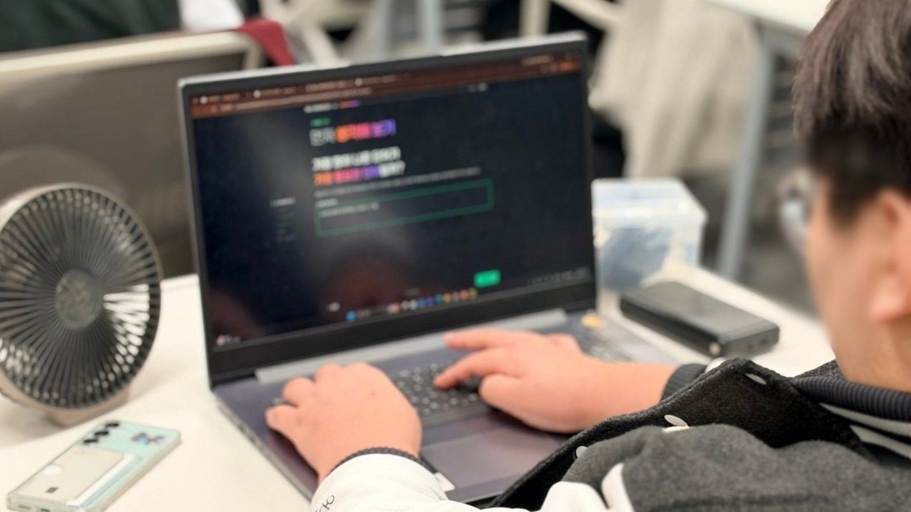
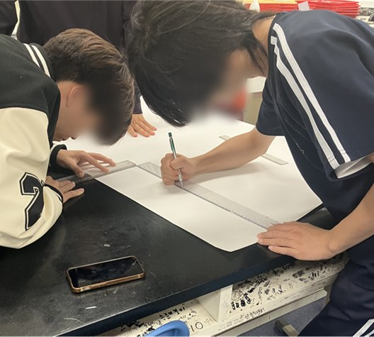
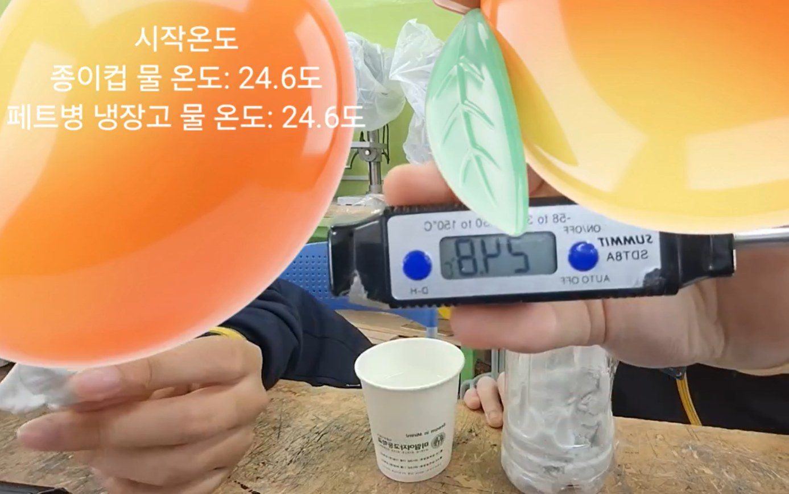

국어 · 가치 발견 · 4차시
기사를 의심하고, 그린 벤처를 제안하다
빅카인즈에서 에너지 기사를 찾아 제목과 본문을 비교하고, 인용된 원자료를 확인한 뒤 모둠 공동 보고서로 가치 제안서를 씁니다.
프로그램 전체 열기 → · 미림마이스터고 이대형
연구 주제
그린 벤처(Green Venture) 프로젝트를 통한 에너지 믹스 최적화 및 기후 행동 역량 강화
에너지 문제를 가치 창출의 기회로 다시 읽고, 실효성 있는 해법을 제안합니다.
국어의 비판적 문해력, 수학의 행렬 모델링, 과학의 AI 최적화, 기술의 적정기술 설계를 잇습니다.
기사의 프레이밍을 원자료와 대조하고, 근거에 기반한 가치 제안서를 씁니다.
한국과 튀르키예 학생이 함께 기후 행동 산출물을 만들고, 적정기술 시제품을 직접 만듭니다.
수업 현장
계산하고, 그리고, 만들고, 재고, 발표했습니다. 학생 얼굴과 이름은 흐리게 처리했습니다.






다섯 개의 프로그램
제목을 누르면 프로그램 전체 화면(도입 영상, 활동, 평가 기준, 수업 PPT)으로, 숫자를 누르면 그 차시를 교실에서 바로 진행하는 수업 화면으로 갑니다.
빅카인즈에서 에너지 기사를 찾아 제목과 본문을 비교하고, 인용된 원자료를 확인한 뒤 모둠 공동 보고서로 가치 제안서를 씁니다.
프로그램 전체 열기 → · 미림마이스터고 이대형국가·기업별 발전량을 행렬로 담고, 배출계수와 곱해 탄소 배출량과 배출권 거래 손익을 계산합니다. 「행렬 × 탄소 실험실」에서 직접 바꿔 봐요.
프로그램 전체 열기 → · 대전대신고 하진수두 나라의 에너지 믹스를 데이터로 비교하고, 동화책·칼럼과 포스터·홍보 영상·사업계획서 중 하나를 만들어 글로벌 데모데이에서 피칭합니다.
프로그램 전체 열기 → · 영훈고 임은희폭염과 전력 수요, 도시 열섬 같은 문제를 데이터로 정의하고, 생성형 AI 프롬프트로 디지털 시제품을 만들고 고쳐 갑니다.
프로그램 전체 열기 → · 서울미술고 황호연디자인 씽킹 5단계로 사용자의 불편을 한 문장으로 정의하고, 태양전지와 주변 재료로 시제품을 만들어 사용 전후를 비교 실험합니다.
프로그램 전체 열기 → · 사당중 김이현무엇을 다루나
다섯 학교의 교사가 각자 개발한 프로그램입니다. 한 학교에서 이어서 운영한다면 앞 프로그램의 결과가 다음 프로그램의 질문이 됩니다.
국어에서 쓴 학교 태양광 제안서의 “학교가 낮에 만든 전기를 얼마나 쓸 수 있을까?”는 수학에서 발전량과 사용량 비교로, 과학에서 환경 효과와 필요한 데이터 검토로 이어질 수 있습니다.
에너지소양 4대 주제
| 프로그램 | 에너지안보 | 에너지믹스 | 무탄소 에너지 | 사회경제 |
|---|---|---|---|---|
| 1 국어 · 대정전과 학교 태양광 기사 | ● | ○ | ● | ○ |
| 2 수학 · 행렬과 탄소 경제 | ● | ○ | ● | |
| 3 국제공동 · 한국–튀르키예 비교 | ○ | ● | ○ | ● |
| 4 과학 · 폭염과 전력 수요, AI | ● | ○ | ○ | |
| 5 기술 · 태양광 적정기술 | ○ | ● | ● |
● 핵심으로 다룸 · ○ 함께 다룸 — 연구회가 각 프로그램의 수업 내용을 기준으로 정리한 표입니다.
대전대신고 2학년 「인공지능 수학」 수강 학생에게 2차시를 적용했습니다.
두 번 모두 응답한 18명 기준이며 통계적으로 유의하지 않았습니다(p=.127). 자세한 해석은 프로그램 5 화면에 있습니다.
“에너지를 아끼자는 막연한 구호를 넘어, 실질적인 비즈니스 모델과 적정기술을 고민하는 ‘그린 벤처’를 기획해 봄으로써 문제 해결에 대한 시야를 크게 넓힐 수 있었다.”
무조건 설치를 권하기보다 사용량과 예상 발전량을 비교해 판단하게 하는 제안
수업 자료
다섯 선생님의 수업 PPT를 한 가지 양식으로 맞췄습니다. 내용과 배치는 그대로예요. 각 프로그램 화면의 ‘수업 PPT’에서 넘겨 보거나 내려받을 수 있습니다.
index.html을 두 번 누르면 이 사이트가 그대로 열립니다. 영상·사진·차시 수업·실험실·PPT가 모두 들어 있어요. 바깥 자료 링크만 인터넷이 필요합니다.
이렇게 쓰세요
노트북으로 같은 주소를 열고, 활동 칸에 생각을 적어요. 적은 내용은 이 기기 브라우저에만 남습니다.
오른쪽 위 ‘교사 모드’를 켜면 발문, 예상 답, 유의점이 단계마다 나타납니다. 끄면 학생 화면이 됩니다.
프로그램 카드의 차시 숫자를 누르면 그 시간만 담은 수업 화면이 열립니다. 수업 진행 상자에서 ← →로 단계를 넘기고, 타이머로 활동 시간을 잽니다. ‘크게 보기’는 전자칠판용입니다.